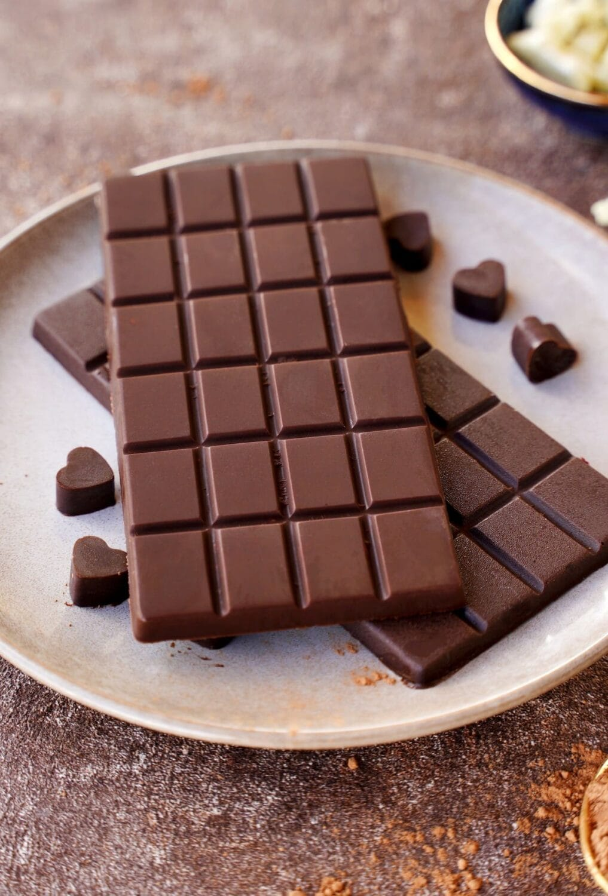

Back to Home Page
Milk Chocolate🍫
This rich and decadent homemade chocolate is made with cocoa powder, coconut oil, milkpowder, and butter. It's easy to make, and it tastes amazing.

Ingredients
- Cocoa powder – ½ cup
- Powdered sugar – ¼ cup (adjust to taste)
- Milk powder – ¼ cup
- Coconut oil or unsalted butter – ¼ cup (melted)
- Vanilla essence – ½ tsp (optional)
- Pinch of salt
Steps
- In a bowl, gently melt coconut oil or butter using a double boiler method (place bowl over hot water). Do not overheat.
- In another bowl, sift cocoa powder, milk powder, powdered sugar, and salt to remove lumps.
- Slowly add the dry mixture into the melted oil/butter. Mix continuously until smooth and glossy.
- Add vanilla essence and mix well.
- Pour the mixture into silicone molds or a greased plate.
- Refrigerate for 1–2 hours until firm OR leave overnight
- Remove from mold and Enjoyy!!
Pro Tip:-You can mix Chopped Nuts,Raisins,Crushed Biscuits etc before setting to make your chocolate even tastier